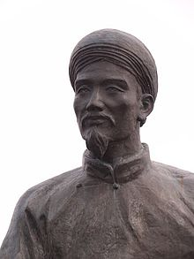

Nguyễn Du was born in a great wealthy family in 1765 in Bích Câu, Thăng Long.[2][3][4] His father’s name is Nguyễn Nghiễm, who was born in Tiên Điền village, Nghi Xuân, Hà Tĩnh, Vietnam. He was the seventh child of Nguyễn Nghiễm, a former prime minister under the Lê dynasty. By the age of 10, Nguyễn lost his father, he also lost his mother at age 13, so for most of his teen years he lived with his brother Nguyễn Khản or with his brother-in-law Đoàn Nguyễn Tuấn. At the age of 19 (some sources say 17), Nguyễn passed the provincial examination and received the title of "tú tài" (Bachelor's degree), which made him (very roughly) the equivalent of a high school graduate. However, in Nguyễn Du's time this was a far more difficult credential to obtain both because few people were affluent enough to devote themselves to study and because of exacting standards applied. Nguyễn's mother was his father's third wife, noted for her ability at singing and composing poetry. In fact, she made her living by singing, which at that time was considered a disreputable occupation. It is said that Nguyễn may have inherited a part of his talents from his mother. He loved listening to traditional songs; and there was a rumor that, when he was 18, he himself eloped with a songstress.

Copyright Wikipedia